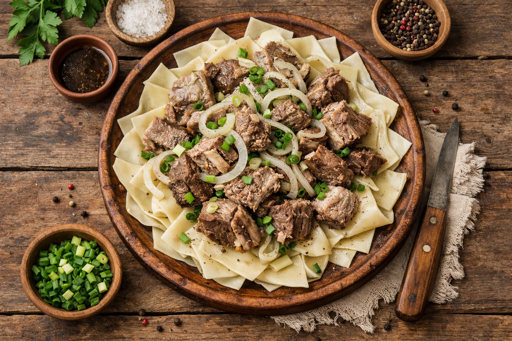
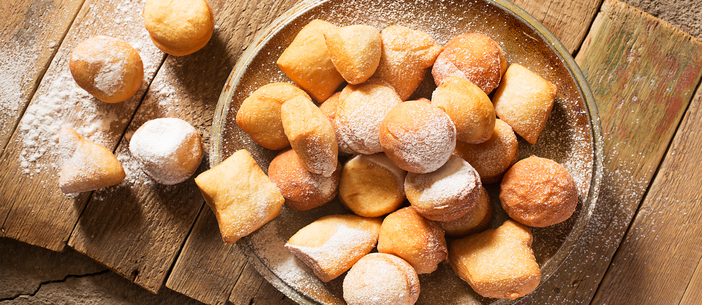
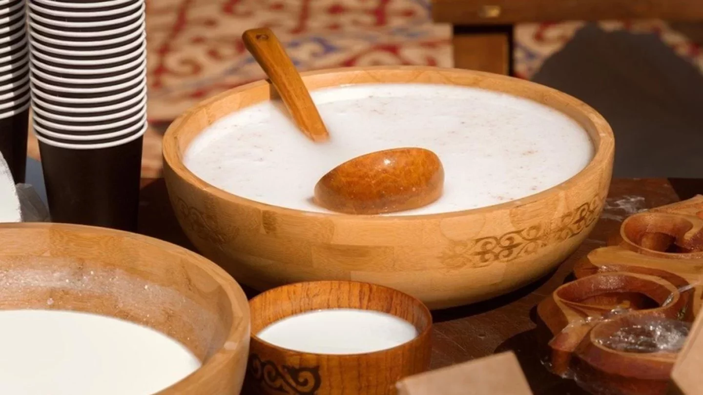

The Story of the Capital
From an 1830 steppe outpost to an internationally recognized center of peace and futuristic architecture, explore how Astana evolved over two centuries.
Akmola Fortress
Established on the picturesque banks of the Ishim River, growing rapidly into a lively trading crossroads along historic caravan routes.
Official Capital Relocation
The state capital was officially transferred from Almaty to Akmola on December 10, 1997, initiating one of modern history's boldest urban architectural projects.
UNESCO "City of Peace"
Awarded this honorable title in recognition of its peaceful inter-ethnic harmony, cultural dialogue, and rapid international diplomatic role.
Nomadic Roots & Traditions
The spirit of hospitality and connection with nature remains the foundation of Kazakh life:
Qonaqjaylyq (Hospitality)
Welcoming travelers with hot tea, fresh baursaks, and the best place at the table is a sacred nomadic tradition.
Sacred Dombra
The two-stringed wooden lute holds the soul of the steppe, carrying tales, heroic epics, and ancestral melodies.
Kiiz Üy (The Yurt)
An elegant dome home harmonizing family life with the seasons, representing family unity and balance with the earth.
Nauryz Meiramy
The ancient vernal equinox celebrating renewal, friendship, traditional games, and shared community meals.
Flavors of the Steppe
Hearty, comforting dishes made for family feasts and cold winters:

Beshbarmak
Tender cuts served over broad homemade pasta ribbons with savory onion broth.

Baursaks
Golden, airy fried dough spheres served steaming hot alongside milk tea.

Qurt & Qymyz
Sun-dried tangy cheese curds and nourishing fermented drinks of the nomads.